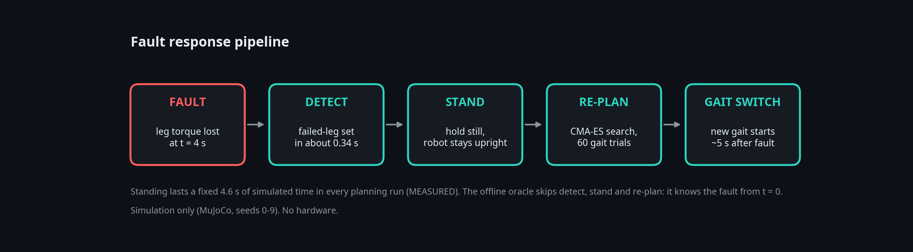
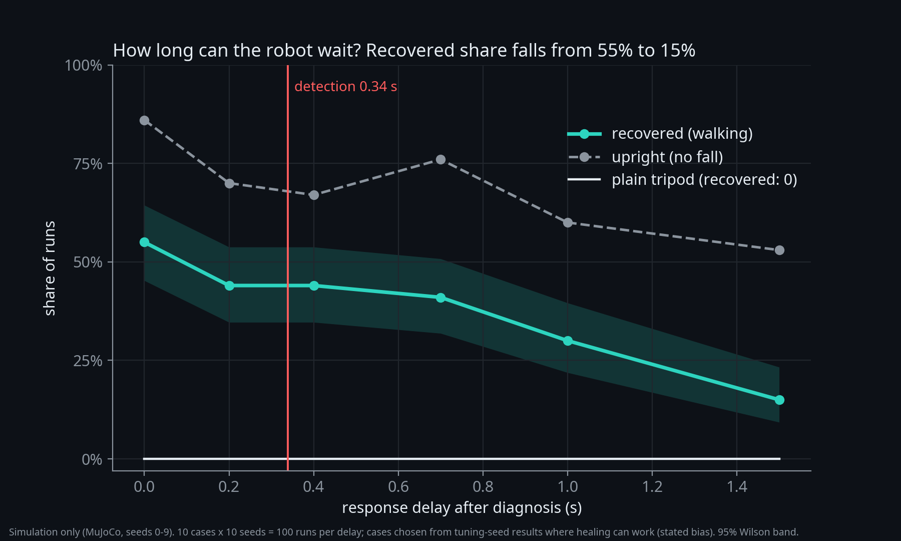
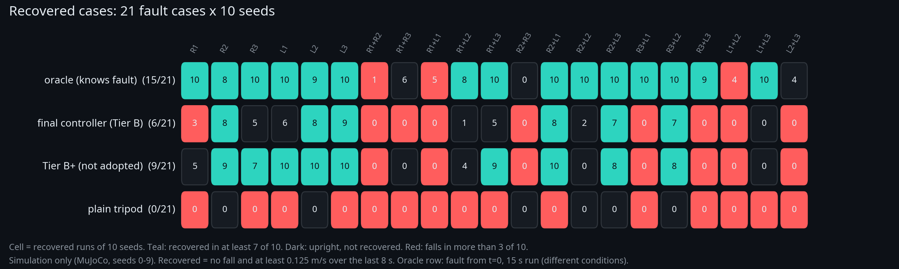

HexaHeal: how long can a six-legged robot wait before it reacts to a lost leg?
Technical note, v4. Simulation only (MuJoCo, 2 vCPU sandbox). No hardware.
Limits. Simulation only; disabled-leg faults on flat ground, 14 s episodes, fault at 4 s, 0.25 m/s command. 10 evaluation seeds (0-9); tuning used seeds 100-109 only. The oracle is an offline upper bound, not a controller. 9 of 21 cases are recovered by no controller; that is not proof they are impossible. Sim-to-real transfer is UNKNOWN.
Question and metric
When 1 or 2 of 6 legs fail (21 cases), in how many does a controller recover? Upright = no fall. Recovered = no fall and at least 0.125 m/s over the last 8 s; a case counts if it holds on at least 7 of 10 seeds. An earlier metric scored a robot that stood still as a success: all 75 upright runs of the plain tripod were standing still.
Controller
The controller finds the failed-leg set in about 0.34 s (mean, MEASURED), stands, then searches a new free gait online with CMA-ES (60 trials over per-leg phase, duty, amplitude, lift) and switches. The stand lasts a fixed 4.6 s of simulated time in every planning run (MEASURED), so the new gait starts about 5 s after the fault.

Headline (MEASURED, seeds 0-9)
| controller | recovered /21 | upright /21 | upright runs standing still /210 |
|---|
| plain tripod | 0 | 6 | 75 |
| online re-planning (Tier B) | 6 | 12 | 54 |
| Tier B+ warm start (not adopted) | 9 | 14 | 39 |
| oracle (offline, knows fault) | 15 | 18 | 26 |
Tier B minus plain tripod: +6 recovered cases, 95% paired-bootstrap CI [+4, +8]. Warm start: no gain by the pre-registered rule (+3, CI [0, +6]; the rule needed at least +2 and an interval that excludes zero).
Latency
Delaying the repair after diagnosis: recovered share 55% at 0 s, 44% at 0.2 s, 41% at 0.7 s, 30% at 1.0 s, 15% at 1.5 s (100 runs per delay). Front-leg faults (R1, L1) fall to 0/10 recovered at 0.2 s. Stated bias: the 10 cases were chosen from tuning-seed results as cases where healing can work.

Per case

What failed or did not help
- Healing v1: 0 recovered, fewer upright cases than the plain tripod (4 vs 6).
- Two tuning rounds (do-no-harm rule, steady-state fitness) lowered recovery on tuning seeds; the config was left unchanged.
- Warm start: no gain by the rule. The Tier B stand-still is a fixed budget; most of its upright runs that end still are not walking after the switch (diagnostic in docs/RESULTS_V4.md). Whether a shorter stand would help is UNTESTED.
- PPO reference: 1 recovered case. Connectome-inspired controller: a small MLP beat it; archived.
Reproduce
make reproduce-v4 rebuilds stats and figures from committed results; bash scripts/reproduce_v4.sh full re-runs the episodes (deterministic). Pre-registrations: docs/PREREGISTRATION_V3.md, V4. Claims register: docs/RESULTS_V3.md, RESULTS_V4.md.